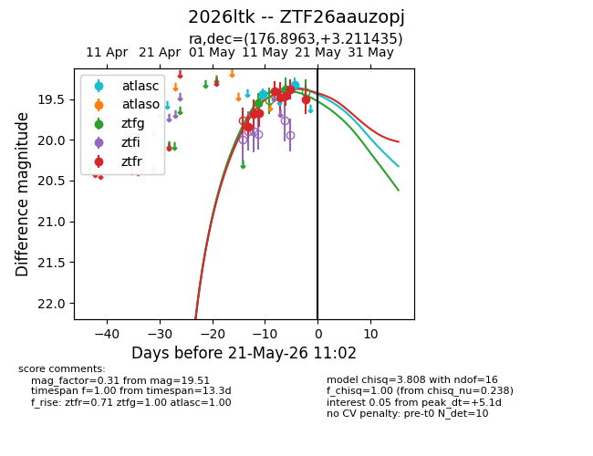
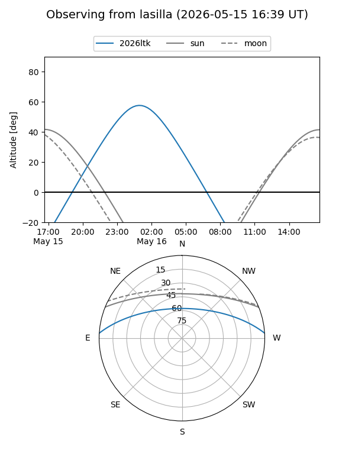
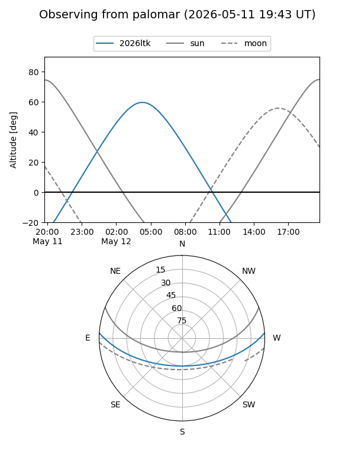
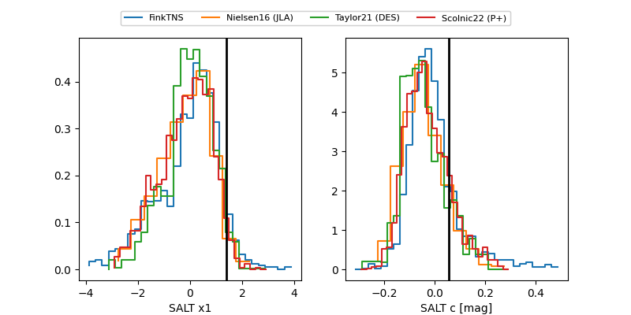

2026ltk
Target 2026ltk at 2026-05-21 11:05
Aliases and brokers:
lsst-FINK: link
lsst-Lasair: link
lsst-ALeRCE: link
ztf-FINK: link
ztf-Lasair: link
ztf-ALeRCE: link
TNS: link
YSE: link
alt names
ZTF26aauzopj (ztf,fink_ztf)
2026ltk (tns,yse)
Coordinates:
equatorial (ra, dec) = 176.8963,+3.21143
equatorial (HMS+DMS) = 11:47:35.11,+03:12:41.17
galactic (l, b) = (267.6347,+61.62666)
Flags:
Photometry:
last atlasc=19.33, ztfg=19.38, ztfr=19.51
2 atlasc, 2 ztfg, 8 ztfr detections
Lightcurve

Visibility


Additional plots
